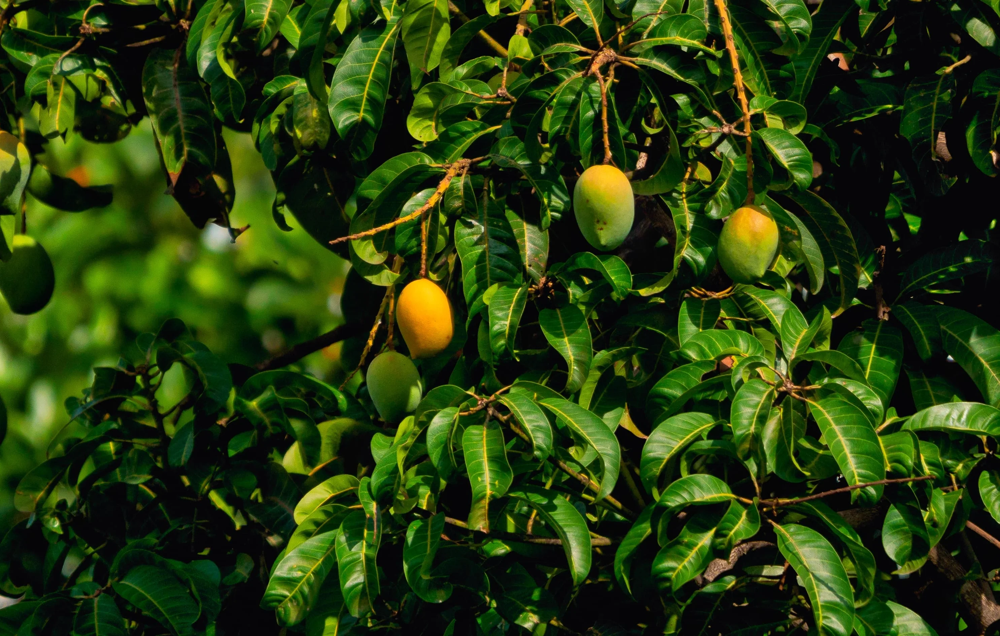

A manga é uma típica fruta de regiões tropicais, com sabor e suculência únicos, jamais encontrada em qualquer outra planta.
A manga é naturalmente uma ótima opção de consumo, mas também dona de um ótimo suco, um sorvete memorável, além de mousses, gelatinas, e muitas outras sobremesas e pratos.
As mangueiras costumam ser árvores de grande porte, podendo atingir mais de 45 metros de altura e 40 centímetros de comprimento.
Umas das frutas mais consumidas em todo Brasil, tendo o nordeste como principal palco de sua produção, é também uma das frutas mais exportadas do país.
Suas variações são incontáveis, com diferentes cores, entre elas a Manga-espada, rosa, tommy, sapatinha entre muitas outras.
A manga é rica em muitas vitaminas, como A e C, rica em cálcio, zinco, potássio, ferro e magnésio.
Em seu interior encontra-se uma única semente, grande, que possui o embrião da planta.
Então é uma ótima opção para complementar sua refeição, a manga cai bem em saladas, e até com carnes, como frango, porco e peixes.
- Mangas vivem muito bem em ambientes com temperaturas mais elevadas, são plantas flexíveis em relação ao terreno em que estão, e contanto que não seja uma área muito fria, é provável que seu desenvolvimento seja bom.
- Temperatura ideal: 25-37ºC.
- É possível optar por encontrar uma mangueira enxertada cujo crescimento é limitado e não será necessário que ela cresça muito antes de dar frutos.
- Normalmente levando metade do tempo normal de uma mangueira, que é o de 8 anos.
- Solos arenosos e fofos, com absorção de água são ideais para a mangueira, solos com pH levemente ácido (4.5-7).